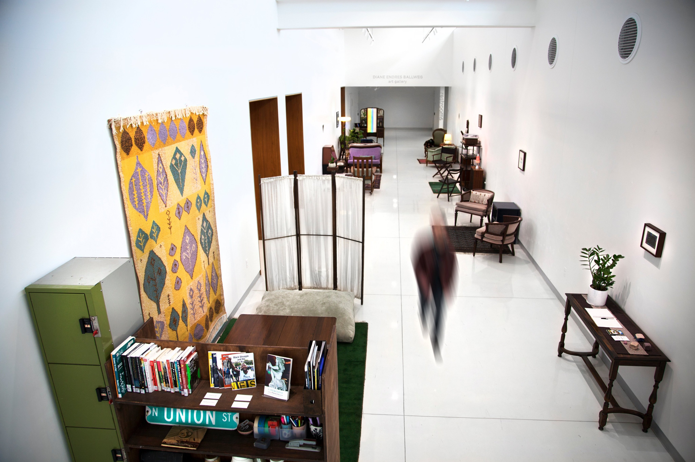

About
Solarpunk Surf Club is an artist collective that creates and curates egalitarian platforms for surfing the waves of still-possible worlds.
Contact: solarpunksurfclub[at]gmail[dot]com
Projects
Solarpunk Futures
Artist's game

Solarpunk Futures is is an artist’s game for collaborative utopian visioning, working in (and against) the conventions of tabletop role-playing.
Read more at TheFuture.WTF
. . .
Græn R∞m
Domestic environment and biblio-installation

Græn R∞m is a public living room for utopian (re)creation. Guests are invited to read, rest, play, and socialize in a cozy, communal environment.
The project takes its name from three different concepts of ‘the green room.’
- In theater, music, and entertainment: a space to relax and socialize backstage; a room for artists and guests to prepare before, and retire after, a performance.
- In the White House: a decorated state parlor used for intimate receptions and tea ceremonies.
- In surfing parlance: the sublime yet precarious space inside the barrel of a breaking wave.
Exhibitions
2021 Art Lofts Gallery, UW–Madison, Madison, Wisconsin
2020 Diane Endres Ballweg Gallery, Madison Public Library, Madison, Wisconsin